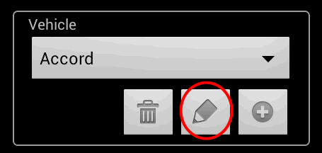
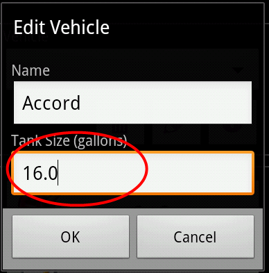

![[fuel gauge]](images/fuel_gauge.png) |
FillUp
|
Frequently Asked Questions (FAQ)
Visit the project website for the
latest version of this help file.
- Why isn't FillUp calculating my mileage?
- Why does FillUp only estimate my mileage?
- Why do the mileage estimates seem wrong?
- What if I forget to record a fuel purchase?
- How do I backup/restore my data?
- What is a CSV file and why should I care?
Why isn't FillUp calculating my mileage?
You need to fill your tank once to establish a starting point, and then
continue recording all of your fuel purchases. Each time you fill
your tank after the starting point, FillUp will calculate your mileage
by determining the distance driven and fuel used since the previous
full tank. All fuel purchases between full tanks are included in the
calculations.
TIP:In the Add Fuel
screen, put a check mark in the "Tank Full" box
to indicate when the tank has been filled, otherwise FillUp will never
calculate mileage.
TOP
Why does FillUp only estimate my mileage?
A full tank is needed to accurately calculate how much fuel was used
since the previous full tank. When you get fuel and the tank is not
full (the "Tank Full" box does not have a check mark in it), FillUp
cannot calculate mileage exactly. Instead it will allow
you to estimate mileage by asking you to approximate how much fuel is
left in the vehicle's tank (move the FillUp fuel gauge needle so that
it matches your actual vehicle fuel gauge reading).
Note that the estimates are for display
only - they are not saved or shown in the Log.
TOP
Why do the mileage estimates seem wrong?
Vehicle fuel tank size is needed to permit the most accurate
estimates. The default tank size is initially set to 16 gallons (60
liters) which is the capacity for an average mid-size car. Check your
vehicle owner's manual to determine the actual fuel tank size, and edit
the
vehicle data in the FillUp main screen to define your tank size.
- Select a vehicle, and click the edit button.

- Edit the Tank Size and click OK.

TOP
What if I forget to record a fuel purchase?
The next time you fill your tank, the mileage calculation will be wrong
(too high). You can hide this value by selecting it in the Log and
clicking "Hide Calculation". This will cause FillUp to ignore it when
plotting data and calculating statistics. Subsequent calculations will
not be effected by the missing data as long as all future fuel purchases
are accurately recorded.
TOP
How do I backup/restore my data?
FillUp Log data is stored in a database file on your phone/tablet. The
data should be periodically saved externally in case you lose your
device or the device is inadvertently reset. FillUp can
save (Export) Log data to a CSV file, and restore (Import) it from
a CSV file. If the Dropbox or Google Drive applications are installed,
FillUp can utilize them as a convenient and safe "cloud storage"
location as follows:
To backup FillUp Log data, perform the following steps for each vehicle
Log:
- View Log for a vehicle.
- From the options menu, select Export.
- If 'Export Confirmation' is displayed, touch Yes.
- Touch Yes to share the exported CSV file.
- Select the Dropbox or Google Drive icon from the list of applications.
- Follow directions on screen to upload the CSV file to Dropbox/Google Drive.
A CSV file will be created in the
Downloads folder of your device's sdcard and then uploaded to Dropbox or Google Drive. The file
name will be the name of the vehicle with
".csv" appended.
To restore FillUp Log data:
- View Log for a vehicle (preferably empty)
- From the options menu, select Import.
- Select 'Cloud storage'
as CSV file location.
- Select the Dropbox or Google Drive icon from the list of
applications.
- Follow directions on screen to select a CSV file from
Dropbox/Google Drive.
- FillUp will download the selected CSV file and read data into the
Log.
NOTE:
Import will fail if the CSV file contains any data that is already in the Log (i.e. same
odometer values). For this reason it is best to Import data into an
empty Log. Either delete all existing data from the Log (delete and
re-create the vehicle) or create a new vehicle with a different name
and Import into the Log for that vehicle.
TOP
What is a CSV file and why should I care?
A comma separated
values
(CSV) file is a plain text file where each line represents a data
record and the record field values are separated by commas. FillUp can
save (Export) Log data to a CSV file, and restore (Import) it from
a CSV file. This feature can be useful for backing up your data,
transferring it from one phone to another, or migrating data from
another application into FillUp.
CSV files can also be used with most spreadsheet programs. In this
case, each spreadsheet row represents a line from the FillUp
Log. The spreadsheet table columns are defined as:
Date/Time
|
Odometer
|
Fuel Amount
|
Full Tank
|
Hidden
|
Total
Cost
|
Notes
|
Calculation
|
| when the fuel was purchased |
the vehicle odometer at the time
of fuel purchase |
the amount of fuel purchased
(gallons or liters) |
true
if tank was filled, false otherwise |
true
if the calculation is hidden in the log, false otherwise |
the total cost of the fuel
purchased.
|
the text entered in the Notes
field when the fuel was purchased (80 characters maximum)
|
the calculated mileage (MPG,
KM/L, or L/100KM) |
For example, the following CSV data represents three FillUp Log entries:
03/19/2014 12:43,114978,11.38,true,false,38.00,Note one ,29.53
03/24/2014 12:23,115304,11.68,true,false,39.00,Another note ,27.91
03/27/2014 12:42,115632,11.08,true,false,37.00,Note three ,29.60
TOP